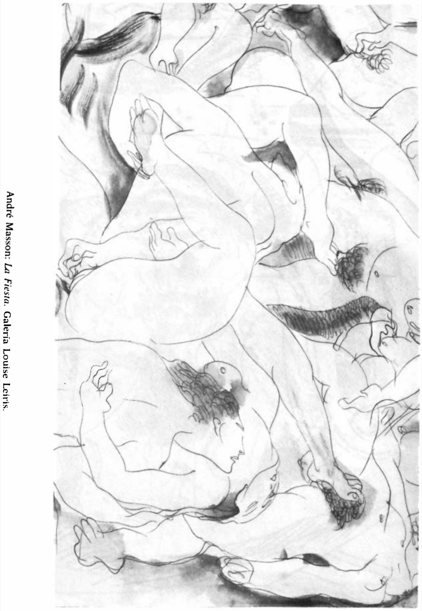

Lágrimas de Eros · Obra 94 de 124
Mantis religiosa
André Masson

Una mantis religiosa, que en 1961 estaba en la Galerie Louise Leiris. Bataille la reproduce en la misma página que el «Sillón para Paulina Borghese», con su nota sobre Masson.
Lo que hace que destaque
Una mantis religiosa, que en 1961 estaba en la Galerie Louise Leiris. Bataille la reproduce en la misma página que el «Sillón para Paulina Borghese», con su nota sobre Masson.
Contexto histórico
Sin identificar. En el escaneado de la p. 170 solo se ve el pie, no la imagen. La cita pertenece a la nota sobre Masson que comparten las dos láminas de la página.
Autoría y procedencia
André Masson (1896-1987), pintor y dibujante francés, pionero del dibujo automático y uno de los artistas más intensos del surrealismo.
En los libros
Las lágrimas de Eros, de Georges Bataille · Lámina de la p. 170
«Masson es sin duda uno de los mejores intérpretes de las honduras religiosas, profundas e inquietantes, del erotismo.»Masson is without doubt one of the best exponents of the profound and troubling religious depths of erotism.Georges Bataille, «Las lágrimas de Eros» (1961), traducido al español de la ed. inglesa de City Lights (1989), p. 170
Ficha pendiente de contrastar con fuentes académicas.